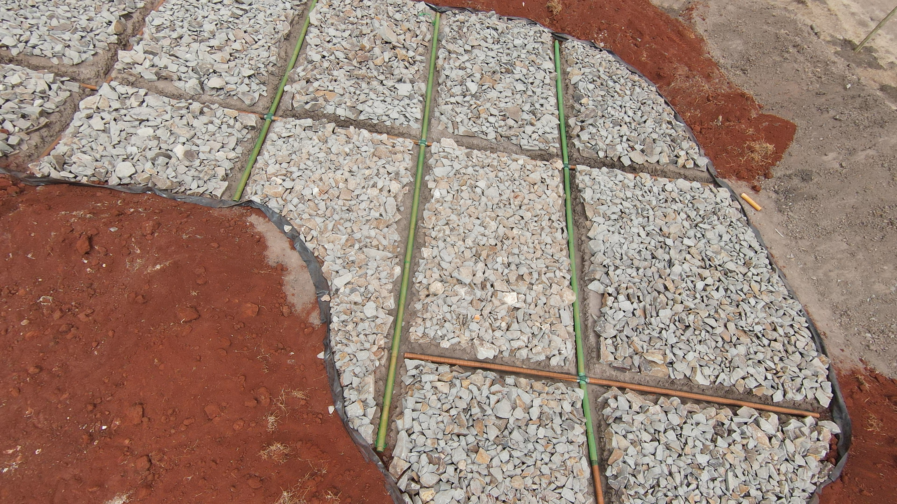
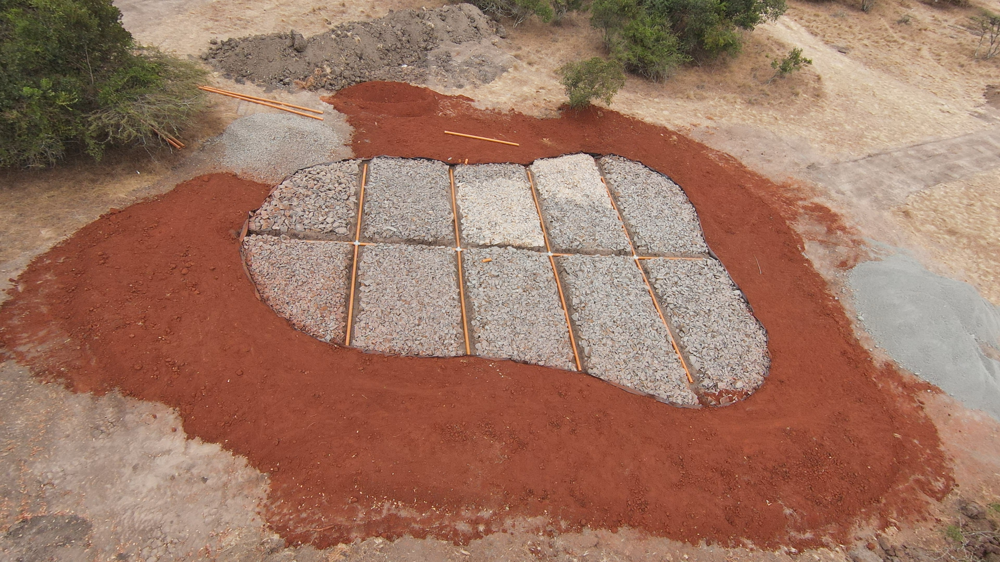
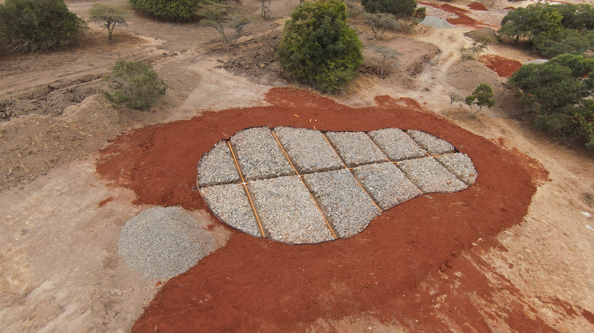
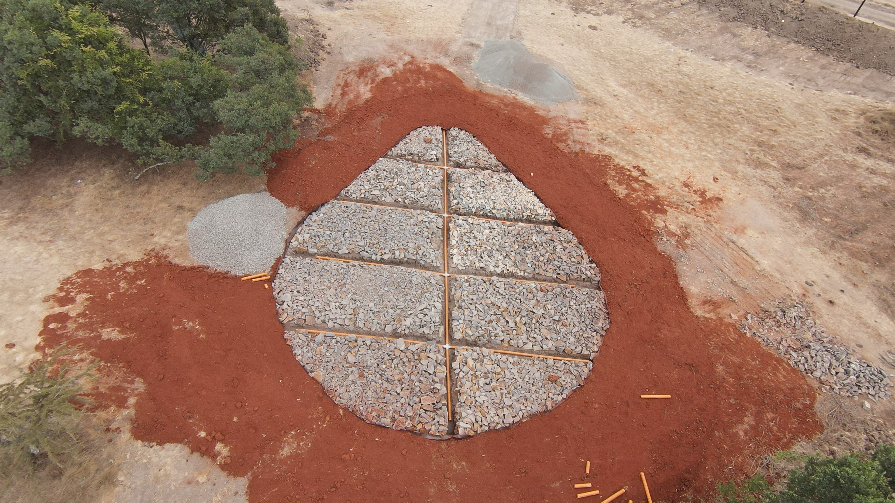
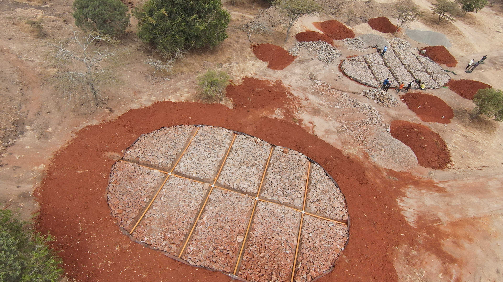
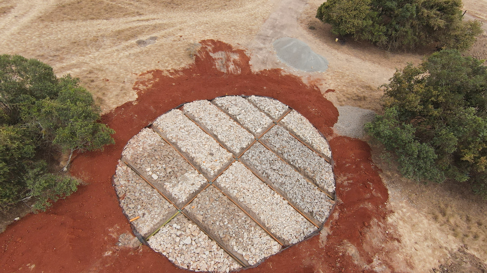

Mucheru World of Golf
Field operations at Mucheru World of Golf focused on laying PVC drainage pipes across greens, installing protective netting on green 10, shaping dumped soil, and receiving the newly arrived JCB backhoe tractor:
- Installing PVC Pipes on Greens 10 to 18: The team installed perforated PVC drainage pipes across nine greens (greens number 10 through 18). Main pipes and branch lines were connected using cross and tee fittings and placed inside stone-filled trenches to drain rainwater off the greens.
- Installing Net on Green 10: On green number 10, workers wrapped a green filter net over the PVC drainage pipe in the trench. The net prevents soil and small stones from entering the pipe while letting water flow through easily.
- Shaping Dumped Soil: Soil that had been dumped on site was pushed, leveled, and shaped to form clean ground levels and mounds around the course.
- Arrival of the JCB Backhoe Tractor: The JCB backhoe tractor arrived on site on a lowbed trailer. The team checked the machine nameplate details (registration KBD 204A, serial number 1716246, engine number 4H.2723/1028624), offloaded it, and put it straight to work shaping the dumped soil mounds.
Key Accomplishments
PVC pipes installed on greens 10 to 18, netting fitted on green 10, dumped soil shaped, and the JCB backhoe tractor arrived and started work on site.
The JCB backhoe tractor arrived on site on a lowbed truck. Details recorded from the machine nameplate during arrival:
| Machine Item | Nameplate / Inspection Detail | Status on Site |
|---|---|---|
| Machine Type | JCB Backhoe Loader | Delivered on lowbed trailer |
| Registration Plate | KBD 204A | Active on site |
| Machine Serial Number | 1716246 | Verified on nameplate |
| Engine Serial Number | 4H.2723/1028624 | Verified |
| Chassis Number | 1716246 L 2010 | Verified |
| Manufacturer & Date | JCB India Limited • November 2010 | Factory build plate verified |
| Work Done on Site | Shaping dumped soil | Actively working on soil mounds |
Machinery Note
The front loader and backhoe are the same machine on site (JCB backhoe tractor KBD 204A), using the front bucket to push and shape dumped soil.
🎥 Mucheru World of Golf — PVC Pipe Installation & Course Progress
Field progress video capturing September 6 operations at Mucheru World of Golf, showcasing trench excavation, laying and fitting of perforated PVC drainage pipes across the greens, and protective filter netting installation.
🎥 Arrival of the JCB Backhoe Tractor
Field video showing the arrival, offloading, and initial movement of the JCB backhoe tractor on site at Mucheru World of Golf.
Field photos showing the delivery and nameplate inspection of the JCB backhoe tractor, shaping the dumped soil, installing net on green 10, installed PVC drainage pipes, and drone photos of the greens:

JCB Backhoe Delivery on Lowbed
The JCB backhoe tractor arriving at Mucheru World of Golf secured on a lowbed trailer.

Nameplate Inspection
Checking the machine nameplate: Serial No. 1716246, Engine No. 4H.2723/1028624, Chassis No. 1716246 L 2010.

JCB Backhoe on Site
The JCB backhoe positioned on a soil mound ready to start work, with the supervisor on site.

Shaping the Dumped Soil
JCB backhoe tractor (KBD 204A) pushing and shaping dumped soil heaps on site.

Dumped Soil Piles
Piles of soil dumped on site ready to be leveled and shaped.

Installing Net on Green 10
Green filter netting placed along the pipe trench on green number 10.

Net on Drainage Pipe
Close-up showing the green filter net wrapped around the PVC pipe inside the stone trench.

PVC Pipes Installed in Green
Main PVC pipe and cross fittings laid in the center trench among the stones.

Aerial View — Pipe Layout on Green
Close-up aerial photo of the drainage pipe lines and stone beds across the green.

Aerial View — Green Drainage Pipes
Overhead photo of the green with PVC pipes laid across the stone base and red soil around it.

Wide Aerial View of Green
Wider drone photo showing the green and surrounding area.

Teardrop Green with Pipes
Drone photo of the teardrop-shaped green with PVC pipes laid in the trenches.

Aerial View of Two Greens
Drone photo showing two greens: one with pipes laid and workers placing stones on the second.

Round Green with Pipes
Overhead photo showing the round green with the PVC pipe network in place.
Chaka Farms
Milking at Chaka Farms was overseen by Kamandau. Yields were recorded for morning and evening sessions in Litres (L). Rations for the goat kids were deducted from the total milk yield:
| Item | Morning (L) | Evening (L) | Total (L) | Deduction (L) | Balance (L) |
|---|---|---|---|---|---|
| Cow Milking Yield | 4.0 L | 2.5 L | 6.5 L | — | 6.5 L |
| Goat Kids Ration | 0.5 L | 0.5 L | 1.0 L | - 1.0 L | — |
| Remaining Farm Balance | 4.0 L Morning | 2.5 L Evening | 6.5 L Gross | - 1.0 L Deductions | 5.5 L Net |
Milking Summary
Total milk produced was 6.5 Litres (4.0L morning + 2.5L evening). After giving 1.0 Litre to the goat kids (0.5L morning and 0.5L evening), the remaining farm milk balance was 5.5 Litres.
A vet visited Chaka Farms and checked on the livestock:
- Sheep Check & Treatment: The vet looked at 1 sheep and treated it.
- Goat Kids Check & Treatment: The vet looked at 2 goat kids and treated them.
Vet Visit Summary
The vet examined and treated 1 sheep and 2 goat kids on the farm.